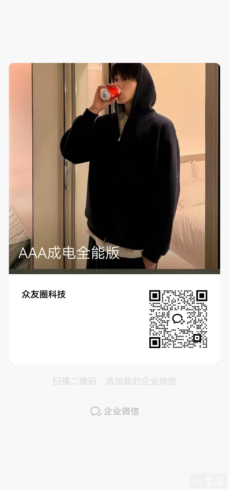

BK成电圈主全能版
📱
圈主联系方式
圈主联系方式
众友圈科技 · 新生服务负责人

扫描二维码，添加圈主企业微信
入学问题随时问，圈主全程帮你搞定
关闭
成电圈主全能版
🎓
电子科技大学 · 清水河校区
Welcome to UESTC
🔇
🔍
AI
📝
报到
🏠
宿舍
📚
学业
🍜
生活
🚄
交通
🛡️
校园网
🎖️
军训
重要通知
📋
入学须知（官方2026版）
报到/缴费/户口/军训/安全考试/收费标准全收录
›
🗺️
官方GIS校园地图
手机端在线查看，双校区导航
›
📋
成电26新生报到指南
官方PDF完整版，13个板块全覆盖
›
全部功能
📝
报到专区
必备材料 · 报到地点 · 流程 · 档案
›
🏠
宿舍专区
床位尺寸 · 热水 · 供电 · 选房规则
›
📚
学业专区
选课 · 四级 · 英才班 · 转专业 · 竞赛
›
🍜
校园生活
食堂 · 一卡通 · WiFi · 打印 · 场馆
›
🚄
交通指南
机场/火车站到校 · 地铁 · 有轨电车
›
🛡️
校园网选择与避坑
电信vs移动 · 套餐对比 · 性价比推荐
›
🎖️
军训/新骨营
军训安排 · 新骨营报名 · 体测
›
🏆
奖学金细则
国奖/国励/校奖/企业奖 · 评选规则
›
🔄
转专业指南
16学院细则 · 流程 · 考核方式
›
💾
专业软件安装教程
16学院专业软件 · 安装步骤 · 开源替代
›
⌨️
编程学习指南
C/C++/Python/Java/JS/Verilog · 学习路线
›
常用链接
🐧
成电2026新生大军全能版群
QQ群，获取最新资讯
›
🗺️
官方GIS校园地图
手机端在线版
›
报到专区
📝
报到须知
时间 · 地点 · 必带材料 · 流程
›
🏠
宿舍专区
选房 · 床位 · 热水 · 供电
›
📋
入学须知（官方）
户口 · 缴费 · 安全考试 · 部门电话
›
🎖️
军训/新骨营
军训安排 · 新骨营 · 兵役登记
›
交通指南
🚄
到校路线
机场 · 火车站 · 地铁 · 有轨电车
›
校园网选择与避坑
🛡️
校园网选择与避坑
电信vs移动 · 套餐对比 · 性价比推荐
›
校园生活
🍜
食堂分布
10大餐厅+商业街
›
💳
一卡通
充值 · 圈存 · 支付宝绑定
›
📶
UESTC-WiFi
免费校园网 · VPN · CARSI
›
🖨️
打印
文印中心 · 品学楼打印机
›
🏊
场馆预约
游泳 · 健身 · 羽毛球 · 篮球
›
🔐
校园VPN使用
校外访问校内资源 · EasyConnect
›
学业专区
📚
选课攻略
权重选课 · A/B/C平台 · 技巧
›
📖
英语入学考试
8月29日 · 分级教学 · 耳机
›
🏆
英才班/转专业
拔尖班选拔 · 转专业 · 大类分流
›
🥇
竞赛指南
电赛 · 蓝桥杯 · 工创赛
›
🏆
奖学金细则
国奖8000/国励5000/校奖 · 评选规则
›
📅
提前查看选课
选课日志 · 课表查询 · 确认结果
›
🔄
转专业指南
16学院细则 · 流程 · 考核方式
›
💾
专业软件安装教程
16学院专业软件 · 安装步骤 · 开源替代
›
⌨️
编程学习指南
C/C++/Python/Java/JS/Verilog · 学习路线
›
外部链接
🐧
成电2026新生大军全能版群
QQ群
›
🗺️
官方GIS校园地图
手机端在线版
›
🌐
迎新网站
freshman.uestc.edu.cn
›
💬
清水河畔论坛
官方学生论坛
›
必关注公众号
📱
成电学工
学生工作/奖助学金/就业
📱
平安成电
安全教育/进校闸机/校园安全
📱
成电宿舍
选房/住宿信息
📱
成电后勤
食堂/后勤/通勤班车
📱
成电微后勤
微宿舍选房小程序
📱
电子科技大学教务处
选课通知/成绩查询
相关部门电话
📞
学生工作部
028-61830078（报到咨询）
📞
教务处
028-61831137（招生咨询）
📞
后勤保障部
清水河028-61830144 / 沙河028-83201090
📞
保卫处24小时
清水河028-61830110 / 沙河028-83200110
📞
校医院
清水河028-61830397 / 夜间13518194790
📞
信息中心
028-61831184
版权说明
本指南由星辰智能体整理制作
内容来源于电子科技大学官方渠道
🏠
首页
📝
报到
🍜
生活
📚
学业
⋯
更多
‹
❤️ 一起电❤我
🤖 AI智能问答
📍 附近搜索
输入关键词搜索，或切换Tab试试 👇
🤖
泥电鱼塘 AI 智能体
我是专为成电新生打造的AI智能助手
基于本指南全部内容，实时一问一答
报到、宿舍、选课、校园生活…什么都能问
➤
📍
电子科技大学 · 清水河校区
成都市高新区（西区）西源大道2006号 · 邮编611731
🔍
🍽️ 餐饮美食
🛒 生活服务
📚 学习场所
🏢 校园建筑
🏃 运动场馆
←
返回